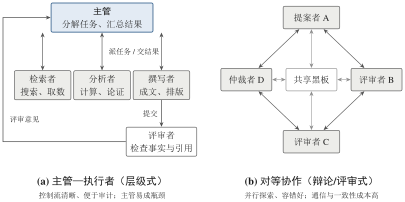

6.6 Agentic AI：从单个智能体到智能体系统
一个智能体的上下文装不下、能力不够专、串行太慢时，自然的想法是让多个智能体分工协作。由此形成的系统常被称为 Agentic AI。本节先说明它与单个智能体的区别，再把生成式 AI、智能体和 Agentic AI 放在一起对照；然后讨论多智能体怎样编排、通信开销怎样估算；最后介绍典型应用、新增的风险与治理手段，以及发展方向。结论是：多智能体的收益来自上下文隔离、能力专精和并行，代价是通信、一致性和调试难度，因此“能用一个就不用多个”应作为默认原则。
6.6.1 什么是 Agentic AI
“Agentic”意为“具有能动性的”。2024 年前后，Agentic AI 逐渐成为业界讨论的焦点。它不是“更聪明的智能体”的同义词，而是一种系统级的组织方式：由多个专门化的智能体组成，在更大的工作流中协调、通信，并动态分配子任务[31]。它的核心特征有四点：多智能体协作、动态任务分解、持久化记忆和高度自主。与单个智能体相比，它更侧重决策过程本身，而不仅是生成内容；它不完全依赖人类提示，也减少了对人持续监督的依赖（高风险环节仍需人工确认，见第 6.6.5 小节）。
这种组织方式有明确的技术动因。任务规模超过一个上下文窗口的承载能力时，把它拆给多个各有独立窗口的智能体，是最直接的扩展办法；任务需要检索、编程、审校等多种不同能力时，让一个提示词驱动的模型“什么都会”，不如让几个专门的智能体各司其职；任务需要在多个方向上同时探索时，串行执行的单智能体时延太长。换句话说，在本节采用的含义下，Agentic AI 是把“一个大上下文里的推理”改造成“多个小上下文之间的协作”，收益是上下文隔离、角色专精和并行，代价是通信、一致性和调试复杂度。
6.6.2 生成式 AI、智能体与 Agentic AI
三者常被混为一谈，但在功能、运行机制和自主性上是逐级递进的（表 6-13，据 Sapkota 等人的对照[31]整理）。
表 6-13 生成式 AI、智能体与 Agentic AI 的对照
| 维度 | 生成式 AI | 智能体 | Agentic AI |
|---|---|---|---|
| 核心功能 | 内容生成 | 使用工具执行特定任务 | 复杂工作流自动化 |
| 主要目标 | 根据提示创作新内容 | 借助外部工具完成特定任务 | 自动化复杂工作流，实现高层目标 |
| 运行机制 | 提示 → LLM → 输出 | 提示 → 工具调用 → LLM → 输出 | 目标 → 多智能体编排 → 输出 |
| 系统结构 | 单一模型 | LLM + 工具 | 多智能体系统 |
| 核心引擎 | 一个大模型 | 一个大模型 | 多个大模型（或同一模型的多个实例） |
| 提示的作用 | 触发生成 | 指导任务 | 指导各个子任务 |
| 工具/API | 无 | 有 | 有 |
| 外部交互 | 无 | 通过外部 API | 多个智能体协调访问 |
| 编排 | 无 | 无 | 有（隐式或显式） |
| 智能体间交互 | 不适用 | 不适用 | 频繁 |
| 决策方式 | 选择输出模式 | 选择并使用工具 | 分解目标并分配给各智能体 |
| 关键特质 | 被动响应 | 工具使用 | 协作 |
| 自主性 | 低 | 中等 | 高 |
表中可以读出一条演进主线：从“生成内容”到“执行任务”，再到“组织任务”。三者不是替代关系：Agentic AI 系统内部仍由生成式模型驱动，每个成员也仍是一个单独的智能体循环；它增加的是“组织层”。打个比方，生成式 AI 像一位博学的顾问，问什么答什么；智能体像一位能干的助理，说要什么它去办；Agentic AI 像一个项目团队，说清目标后团队自己分工、互相检查、汇总交付。团队的优势不在于单个成员更强，而在于分工、复核和并行；团队也有团队的毛病——沟通成本、责任分散，以及“集体幻觉”：成员共享同一个错误前提，或相互引用彼此的输出而没有独立证据，错误被反复确认而不是被纠正。表 6-13 中的自主性高低指典型情形，实际系统的自主程度可以按第 6.4.1 小节的等级配置。
辨析
“Agentic”还有一个更宽的用法：泛指系统具有能动性的程度，单个智能体也可以说“很 agentic”。本节的 Agentic AI 采用较窄的含义，专指由多个智能体协作完成复杂目标的系统。阅读资料时要先分清作者用的是哪种含义。
6.6.3 多智能体编排
多智能体系统的核心问题是编排（orchestration）：谁来决定任务怎么分、分给谁、结果怎么合。图 6-10 给出两种典型形态。

图 6-10 多智能体的两种典型编排。(a) 中主管与每个执行者之间往返一次消息；(b) 中各智能体互相发送意见，并通过共享黑板同步状态，若每个成员都把意见发给其余所有成员，消息数随智能体个数按平方增长
主管—执行者（层级式） 一个主管智能体（也称规划者）负责分解任务、分派子任务、汇总结果，若干执行者各自完成专门的工作，评审者检查执行结果。控制流清晰、便于审计、职责明确，适合能预先分解的任务，例如“检索—分析—撰写—审校”的文档生产。缺点是主管容易成为瓶颈：所有信息都要经过它，它的上下文迅速膨胀；它的一个错误判断会影响全部子任务。
对等协作（辩论/评审式） 多个地位平等的智能体就同一问题各自提出方案，通过相互批评、投票或仲裁达成结论。可以并行探索，单个成员的错误不容易主导结论，适合答案不唯一、需要多角度审视的任务（方案评估、事实核查）。缺点是通信量大、需要额外的仲裁机制，并且存在群体极化风险：几个智能体可能相互强化同一个偏见。
此外还有几种常见模式：流水线式，每个智能体负责一个阶段，前一个的输出是后一个的输入，MetaGPT 按软件公司的标准作业流程把需求分析、设计、编码、测试交给不同角色就是一例[30]；黑板式，所有智能体读写同一块共享状态（黑板）；市场式，发布方给出子任务、预算和验收标准，各智能体按自身能力和成本报价，发布方择优分配。选择时看三点：子任务之间耦合越强，越需要集中协调；错误代价越高，越需要多重校验，辩论式或“执行者—评审者”结对更合适；时延要求越紧，越要减少串行环节和通信轮次。
通信开销可以估算。在对等协作中，如果每个智能体每轮都把自己的意见发给所有其他成员，\(n\) 个智能体每轮产生 \(n(n-1)\) 条消息，随 \(n\) 按平方增长；在主管—执行者结构中（这里 \(n\) 指执行者个数，不含主管），主管向 \(n\) 个执行者各派一次任务、各收一次结果，每轮只有 \(2n\) 条消息。
例 6-4 多智能体的通信开销
为一份 50 页的报告做事实核查，比较两种编排：(a) 1 个主管 + 4 个执行者，每个执行者核查一部分，只做 1 轮；(b) 5 个对等智能体辩论 3 轮，每轮每个智能体把意见发给其余 4 个。每条消息约 500 个 token，收到的消息都要作为输入读一遍。
| 步骤 | 算什么 | 算式 | 结果 | 这个数从哪来 |
|---|---|---|---|---|
| 1 | (a) 消息条数 | \(2\times4\) | 8 | 派任务 4 条 + 交结果 4 条 |
| 2 | (a) 消息 token | \(8\times500\) | 4000 | 每条 500 token |
| 3 | (b) 每轮消息条数 | \(5\times(5-1)\) | 20 | \(n(n-1)\)，\(n=5\) |
| 4 | (b) 3 轮消息 token | \(20\times3\times500\) | 30 000 | 3 轮，每条 500 token |
| 5 | 二者之比 | \(30\,000\div4000\) | 7.5 | 第 4 步 ÷ 第 2 步 |
数据流向：智能体个数与轮数 → 消息条数 → 乘以每条长度得到需要读入的 token。这里只计消息本身；每个智能体还要读入自己负责的报告片段，并且如例 6-1 那样，上下文会随轮数累积，实际开销更大。辩论式多花的这些 token 换来的是交叉审视，只有当错误代价高到值得时才划算。
必须强调，多智能体并不自动优于单智能体。一个被反复验证的经验是：单智能体能达到同等效果时，不要引入多智能体[8],[23]。每增加一个智能体，就多一份上下文组装成本、一份通信成本、一份失败的可能，调试难度也明显上升。多智能体的正当理由主要有三条：上下文必须隔离、能力必须专精、时延必须靠并行压缩。智能体之间的通信需要协议支撑，这正是第 6.4.5 小节介绍的 A2A 的用途：它定义智能体如何描述自身能力、发起任务、回传结果，使不同团队、不同厂商的智能体能够互操作。
6.6.4 应用举例
多智能体研究助手 这是目前最成熟的形态，用于自动完成多阶段的资料整合与文档撰写：规划者把研究问题拆成子问题，检索智能体分头搜集资料，分析智能体交叉验证并整理数据，撰写智能体成文，审校智能体检查事实与引用。它把一个人做不完的调研变成可并行的流水线，并用评审环节减少幻觉。衡量它的关键指标不是写得多快，而是引用能否追溯、事实错误率多高。
机器人协作 多机器人系统用于仓储自动化、无人机巡检、自动采摘等。与软件智能体不同，它必须处理物理约束：通信延迟、定位误差、碰撞风险、电量限制。编排常采用“集中规划、分布执行”的混合结构，并保留独立的安全控制器。
协作医疗决策支持 用于分布式的医疗推理：影像分析、病史梳理、指南检索、药物相互作用检查各由一个智能体负责，意见经汇总后由医生确认。设计原则是辅助而非替代：系统给出结构化的证据和分歧点，最终判断权留给专业人员。难点在于表达分歧——系统要说清“哪几条证据支持哪个结论”，而不是只给一个概率。
游戏 AI 与自适应工作流 在仿真环境中，多个智能体可以低成本地试错与演化，是研究协作策略的平台。在企业系统中，各部门有各自的智能体，通过协议协同完成跨部门流程，实现去中心化的任务执行与协调；难点在于权限边界、审计追踪和责任归属。
6.6.5 风险、评估与治理
与单个智能体相比，Agentic AI 新增了系统级的失效方式：
错误传播：一个智能体的错误输出成为下游的输入，并被当作事实；下游还可能把上游的错误“合理化”，使它显得更可信。防御：关键结论要求多来源交叉验证，智能体间传递信息时附带来源与置信度，设置专门寻找反例的“质疑者”角色。
成本失控：并行运行使 token 消耗成倍增加，相互触发可能形成“无限对话”。防御：全局预算、单个智能体配额、通信轮次上限、循环检测。
信息失真：消息多次传递后被摘要、改写，细节逐渐丢失，像“传话游戏”。防御：保留原始证据的引用，限制摘要层数，在关键节点回到原始数据核对。
攻击面扩大：每个智能体、工具和通信通道都是潜在入口，一个被注入恶意指令的网页可能影响整个系统。防御：最小权限、网络隔离、输入净化、输出审查、严格区分数据与指令。
难以调试：多智能体的交互关系可能极其复杂。生产系统必须内建分布式追踪：为每个任务分配追踪编号（trace ID），记录每个智能体的输入、输出、工具调用和耗时。
责任归属同样是问题：系统自主做出一连串决策后，谁对结果负责——设定目标的人、部署系统的组织、模型提供方？法律上尚无定论，工程上可以先做到：明确责任边界，保留完整审计日志，高风险决策强制人工确认，并向用户披露系统的自主程度（表 6-8）。
评估也要更立体，至少包含四类指标：效果（任务成功率、子目标完成率）、效率（轮数、时延、token 成本）、稳健性（输入扰动下的表现、异常恢复率）、安全（越权尝试拦截率、注入攻击成功率、人工干预率）。只报告成功率的评估不完整，因为它看不出系统在少见情形和对抗条件下的行为。
6.6.6 发展方向
多智能体扩展 从几个智能体的小团队，走向大规模、分布式、异构的智能体并行工作。难点不仅在数量，更在异构：不同厂商、不同能力、不同可信程度的智能体如何协同，需要标准化的能力描述和信誉机制。
统一编排 动态分配角色、管理通信、协调依赖、解决冲突。目前的编排多由人预先设计流程；今后需要系统按任务特点自动选择编排形态：简单任务用单智能体，复杂任务自动扩展为团队，并在执行中调整。
持久性记忆 包括语义、情景、共享等多个层次。Agentic AI 要记住的不只是对话，还有“组织知识”：哪些方案奏效过、哪些客户有特殊要求、哪些流程容易出错（第 8.1 节）。
仿真规划 在真实环境中试错代价太高，因此先在内部模型中预演决策路径：用世界模型模拟行动后果，用搜索比较多条路径，再把最优方案付诸实施。
伦理治理 系统层面的伦理、法律与责任边界，确保安全与合规。技术手段包括可解释的决策记录、可撤销的操作、技术上强制执行的权限与配额、可配置的自主等级；制度手段包括披露义务、审计要求和事故报告机制。
行业专用系统 深度定制的专家级智能体系统。通用智能体在开放领域表现亮眼，在专业领域却常不如“通用模型 + 领域工具 + 领域知识”的组合。可能的形态是“通用底座 + 行业插件”：底座提供推理与编排，插件提供领域工具、术语、合规规则和评估集。